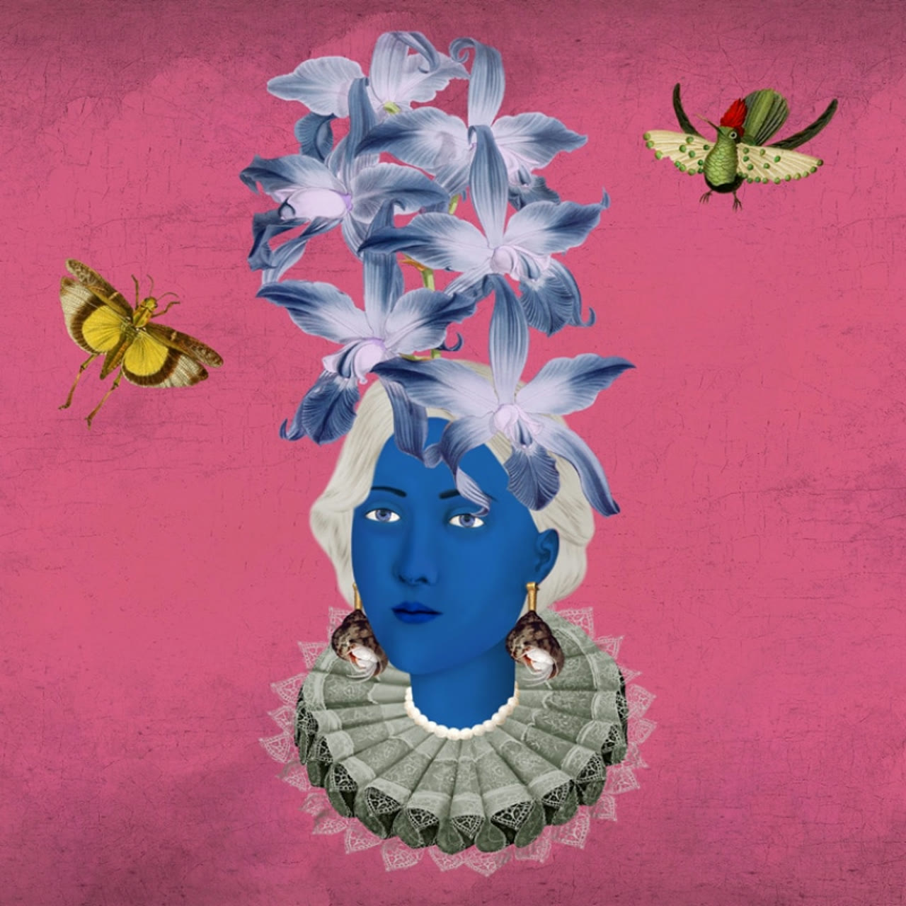

Collection development / Art & blockchain launch
Flower Girls
Art, with a launch experience around it.

Original collection website and artwork. Artwork by Varvara Alay.
The work
Development work on the Flower Girls collection launch and its web experience. Flower Girls and Puzzle People are separate projects.
What I built
Collection launch and sales web experiences, smart-contract integration, and collection tooling.
- LaunchThe web experience around the collection.
- IntegrationCollection tooling and smart-contract integration.
- RoleDevelopment, rather than authorship of the collection artwork.
Historical collection development. Original artwork by Varvara Alay.